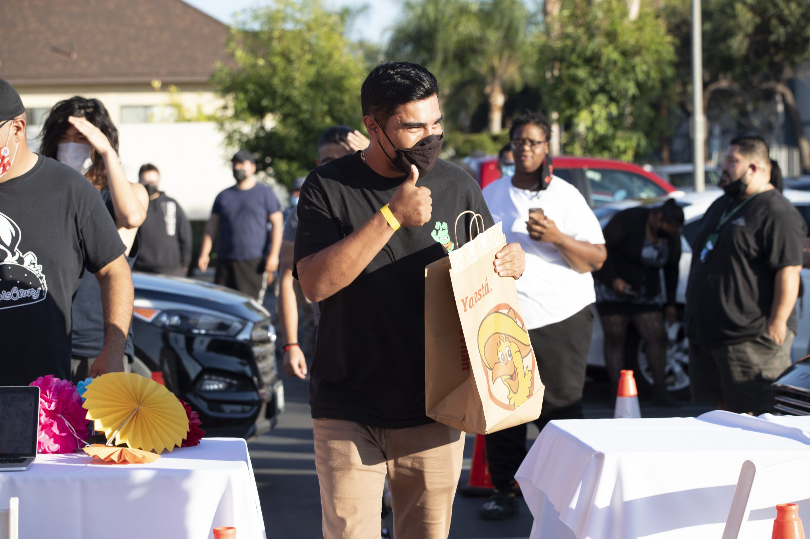
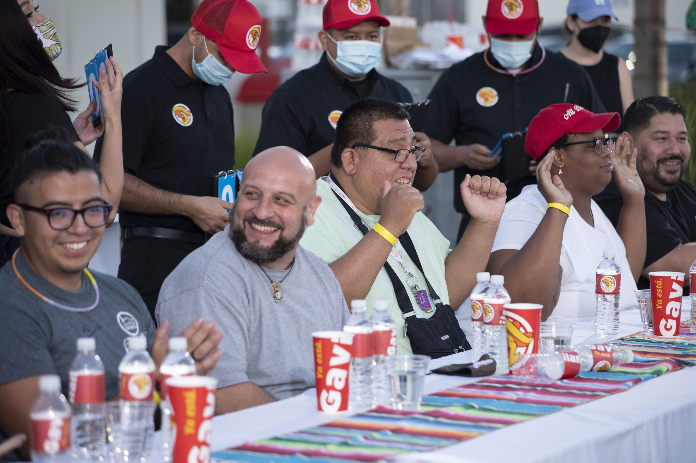
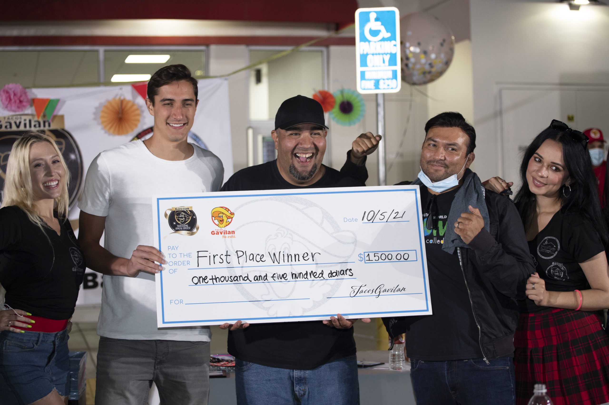

First Annual Taco Eating Contest Celebrates Hispanic Heritage Month
Tacos Gavilan Taco Eating Contest Celebrates Hispanic Heritage Month
Partnering with the Non-Profit, A Place Called Home
On Taco Tuesday, October 5th, 2021, Tacos Gavilan invited Women, Men and Children to compete in the first annual taco eating contest at Tacos Gavilan for a grand prize in each category of $1,500 cash. Taking place at the 1900 S. Central Ave, Los Angeles location, the event was held in recognition of National Taco Day x Hispanic Heritage Month, and in support of the local, South Central based non-profit, A Place Called Home.
Cheering on the taco eaters while signing autographs and interacting with fans of all ages was professional footballer from Los Angeles Football Club (LAFC), Pablo Sisniega, who was a shining example of giving back. The Tacos Gavilan taco eating contest is one event in the #GavilanGivesBack series that takes place throughout the year.
El Gavilan, the namesake for the growing Tacos Gavilan fast-casual taco chain, came to America with $97 and is a powerful example of an immigrant’s success story. Never forgetting his roots, El Gavilan and his family have made a commitment to always lend a helping hand and give back to the community who have contributed to their success.
Bringing with him from Mexico the kitchen table recipes of authentic Mexican food that he grew up on, he was determined to share the tastes, nutrition and affordability of the foods of his abuelitos, madre and relatives with Los Angeles and its burgeoning Mexican population of dreamers.
Now with 14 locations throughout the Greater Los Angeles Area, Tacos Gavilan is determined to be a community leader in sharing its success through various #GavilanGivesBack contests, events and contributions to worthy local causes. Stay caught up on giveaways, prizes, contests and more by filling out Tacos Gavilan’s Enter To Win form. Participants and attendees of the Tacos Gavilan taco eating contest enjoyed food, amazing giveaways throughout the event, live DJ music, and children friendly activities including giant inflatable soccer, face painting and a photobooth! Centered around being a day of community fun, the Tacos Gavilan taco eating contest also was dedicated to raising and contributing funds to A Place Called Home, which is a special non-profit to the Tacos Gavilan community of South Central.

A Place Called Home
A Place Called Home is a family resource center that has been serving South Central L.A. youth for over 27 years. This creative non-profit quickly responded to the needs of the community during the COVID-19 pandemic by offering virtual programs and assisting those in need. On a daily basis, A Place Called Home offers youth Educational Services, Arts, and Creative Expression along with Health, Nutrition and Well Being programs. Serving all ages, A Place Called Home actively seeks to keep children in school and graduating with their Teen & Young Adult Services, and Da Vinci High at APCH.
The Da Vinci High APCH which opened in 2017 is a program that was dreamed of and planned for years. Specially tasked with serving the most at-risk youth, those who are homeless, in foster care or recently incarcerated, Da Vinci High APCH is wholeheartedly supported by Tacos Gavilan. Da Vinci High APCH puts these youths on a path to a successful life by recovering credits to obtain their high school diplomas, prepare for the GED, participate in college or career training and a host of other necessary services.
Celebrity Guest Pablo Sisniega
Tacos Gavilan considers every guest a special guest and we were especially proud to welcome Pablo Sisniega to our event, a professional footballer who now plays Major League Soccer for the Los Angeles Football Club. Hispanic Heritage Month is a celebration of our culture, and Sisniega proudly represents his home country of Mexico on an international stage. Born in Mexico City, Pablo Sisniega has been involved in team soccer since 2004 when he played for Guadalajara.
After stints with the Philadelphia Union and Real Sociedad teams, Sisniega signed with the Los Angeles Team in February of 2019. Since his signing with the local club and becoming the goalkeeper, Sisniega has become a Los Angeles fan favorite. His local celebrity status and football acumen made him a welcomed guest at the Tacos Gavilan taco eating contest.

The Taco Eating Contest
Amid all the excitement, fun, children’s activities, and live DJ with an air of a festival, the main event was the Epicumar Taco Eating Contest. The grand prize in each category was $1,500, second prize was $1,000 and third prize was $500. There were three categories of competition, one for men, women, and children respectively. The winners of the Tacos Gavilan taco eating contest were able to eat an amazing twenty-five-plus tacos to capture the grand prize. The first 50 guests who RSVP’d early to attend this free event also went home with a Tacos Gavilan “swag bag.” Everyone who attended this special celebratory, festival-like event in honor of National Taco Day and Hispanic Heritage Month was a winner.

Hungry for Authentic Mexican Food?
Order ahead from your nearest Tacos Gavilan location for quick pickup or dine-in.